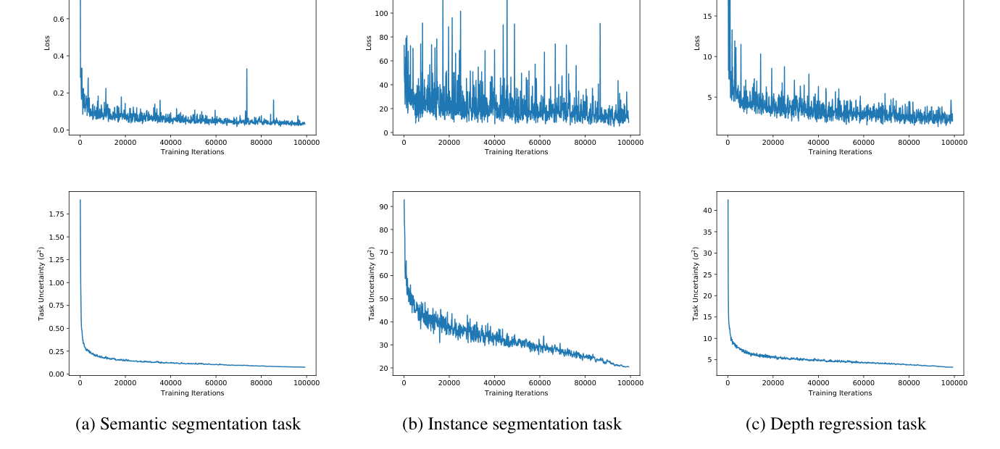

Set each task's volume from the data's noise. Noisy tasks count less, automatically.
I set GradNorm's volumes by watching training dynamics on the last page. Here I set them from the data itself: some tasks are just noisier than others, and a noisy task should count less. The model learns exactly how much less.
On this page
Take scene understanding on CityScapes: one monocular image in, three tasks out. Per-pixel depth is a regression task; semantic segmentation and instance segmentation are classification tasks. Different units, different scales, one shared representation.
Here is the problem: the loss weights strongly affect performance, and tuning them by hand is a difficult and expensive process. That makes multi-task learning prohibitive in practice.
The way out: derive the weights from each task's task uncertainty instead of guessing them. One number per task, the task uncertainty, is learned as a parameter during training, and it tells the model how much to trust each loss.
GradNorm, the method on the previous page, steps in after the losses exist. It takes the gradients as given and repairs their loudness, watching who falls behind. This idea is older and quieter, and it works one level earlier. Instead of asking how to fix conflicting gradients, it asks how loud each loss should be in the first place. And it answers with a principle from probabilistic modeling: a loss that is inherently noisier should count less.
Think of each task's output as a measurement. Some measurements are crisp: given the same image, the right answer barely changes. Others are inherently fuzzy: predicting the exact depth of every pixel has a floor of guesswork no model can beat, because the information simply is not in the image. That irreducible fuzziness is task uncertainty: one learned number per task, bigger means noisier. A task with high uncertainty is one where even a perfect model would still spread probability over several answers.
Here is the key move. If a task is that noisy, pushing hard on its loss is partly pushing on noise: the model chases fluctuations it cannot remove. So turn the volume down on exactly those tasks, by an amount tied to how noisy they are. Each task gets a weight that shrinks as its noise grows, quadratically: a task twice as noisy counts four times less. The noise levels are learned as parameters during training, not set by hand.
Regression halves the weight that classification gives the same noise level; the honesty price works the same for both.
Then each task pays a small honesty price for claiming to be noisy. The model may quiet a task, but it pays a price for the privilege, so it only quiets tasks that truly are noisy. Without the price, the cheapest move would be inflating every noise level to infinity and paying nothing. And a confident task gets a small rebate for claiming to be easy.
L = Σᵢ (Lᵢ/2σᵢ² + log σᵢ) regression
Li = 1):
One training step, start to finish: measure the losses, price each one by its noise, total the bill, and learn both the network and the noise levels together.
1.0; mid-training sigmas are semantics 0.7 (classification), instance 1.5 (classification), depth 2.4 (regression).# log_sigma = learnable vector, one entry per task, init 0
# (regression form shown; classification uses w_i = 1 / sigma2, no 1/2)
total = 0
for i in range(K):
sigma2 = exp(2 * log_sigma[i]) # sigma_i^2, always positive
w_i = 1 / (2 * sigma2) # the volume knob
total += w_i * losses[i] + log_sigma[i] # loss + the honesty price
backward(total) # one pass updates network AND log_sigma
step(optimizer) # network and sigmas learn togetherNo separate tuning loop: paste the loss, add one vector of parameters, and the noise levels ride the same backward pass as the network.
What the experiment was: the three CityScapes tasks trained for a hundred thousand iterations. What each row shows: the top row tracks the losses, the bottom row the learned task uncertainties. What good looks like: the uncertainties settle within the first few thousand iterations. The weights found themselves.

Step back. GradNorm and uncertainty weighting are both scale methods: they change how loud each loss is, never what the gradients say. GradNorm learns the volumes from training dynamics, boosting whichever task falls behind. Uncertainty weighting sets them from the data, turning down whichever task is inherently noisy. On multi-task vision benchmarks, both matched or beat hand-tuned and grid-searched weights.
The two methods even compose, because uncertainty weighting only ever sees losses. Weight the losses by learned uncertainty, then run PCGrad or CAGrad on the resulting gradients: the learned noise levels handle scale while the surgery handles direction.
And that is the boundary. Neither method fixes direction. Two tasks can be perfectly weighted by noise and still have gradients that point against each other. Uncertainty weighting never looks at gradients at all; GradNorm measures only their lengths, never their angles. GradNorm is also a heuristic with no convergence guarantee: equal loudness does not mean the tasks agree.
The two volume knobs and the two steering methods, side by side:
| Method | The question it answers |
|---|---|
| GradNorm | How loud should each task be, to keep progress balanced? (learned, driven by training dynamics) |
| Uncertainty | How loud should each task be, given how noisy it inherently is? (learned, driven by the data) |
| PCGrad | How should the directions be edited so tasks stop fighting? |
| CAGrad | How do we protect the worst-off task and stay near the average, with a guarantee? |
The volume knobs are balanced. But what if the directions themselves fight? That is the PCGrad page's question.